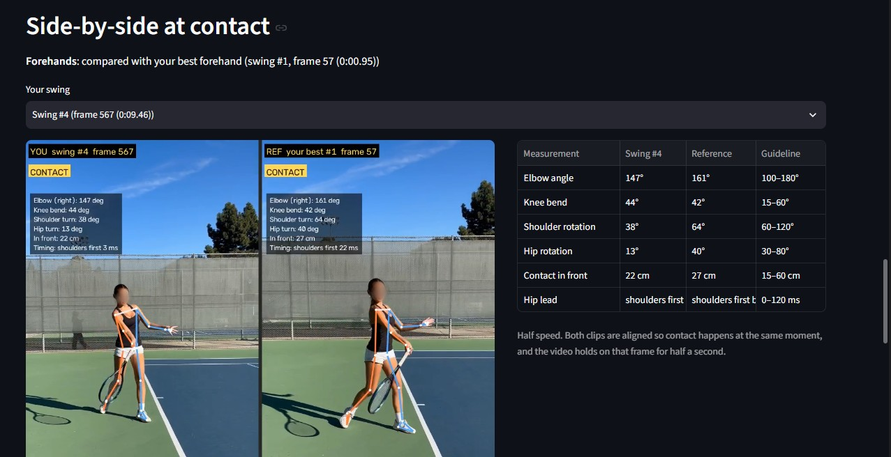

Featured project
AI Tennis Coach
One phone video in, frame-by-frame technique fixes out. Built for players who can't afford private lessons.
See the code on GitHub

Why I started
I wanted tailored feedback from something actually worth listening to, anytime and anywhere, without needing a coach or scheduling lessons. Between soccer, school and club tennis, hard classes, and family, I don't have time to book sessions. But I still want to get better every time I play.
What I built
- Finds every swing in the video.
- Tracks joints with MediaPipe.
- Measures elbow, knees, rotation, and contact point at the moment of contact.
- Gives three specific fixes, each citing the measured number and the frame it came from.
- Shows each swing side by side with your best one.
Where it is
I built v1 in two days. Tested on my own swings and on clips from a player I coach on my school's girls' tennis team, used with her permission.
- Known limitation
- Walking between points can register as a swing.
- Next
- Fix that, then get it to the girls’ team I coach and my own team.
Cancer research
Three of my aunts have been diagnosed with cancer. Two have passed away, one in 2024, and another has been fighting stage 3 cancer since 2025. That turned my interest in biology into something personal and pushed me to explore how data and computing can help.
- UCI COSMOS
- Studied at COSMOS at UC Irvine, a selective summer STEM program: tissue and tumor biology, and math and computational modeling.
- Cancer prediction
- Building models (XGBoost and neural networks) that predict cancer from biomarker data. I started with pancreatic cancer using a published urinary-biomarker dataset, and I'm now expanding to other cancer types.
About me
- Tennis
- Boys varsity captain. All-League First Team in 11th grade, Second Team in 10th.
- Coaching
- Coach for my school's girls' tennis team.
- Soccer
- NorCal State Cup champion with my club team (U16 Boys, top State division, 2025).
- Debate
- 2nd speaker of 153 at the UC Berkeley Cal Invitational (2025).
- Geography
- 9th (2024) and 12th (2025) at the U.S. Geography Championships.
- Science
- 12th place at the National Science Bee in 9th grade.
- Aquascaping
- Self-taught. I run three tanks, including a shrimp-breeding tank.
- Building
- Grew up soldering, building PCs, and flying drones with my dad and brother.